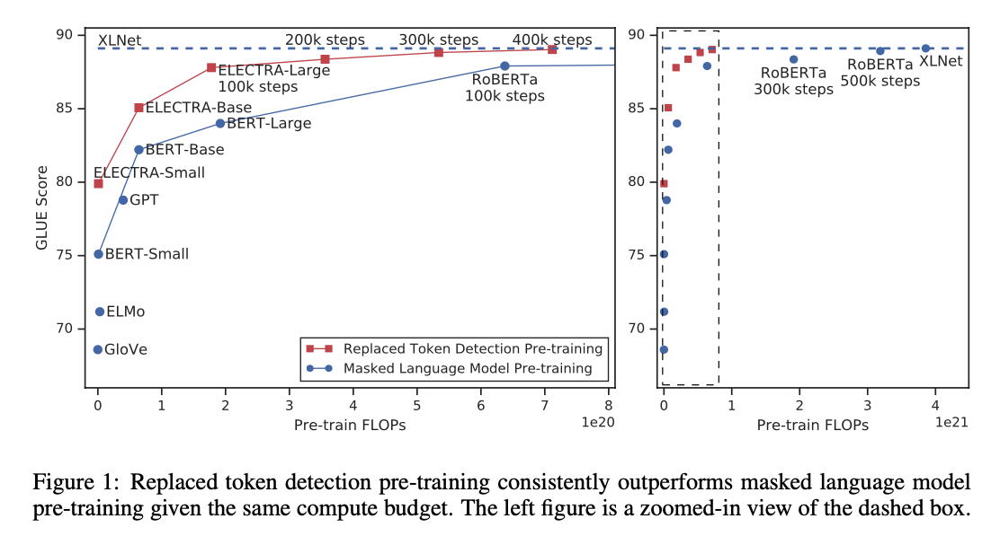
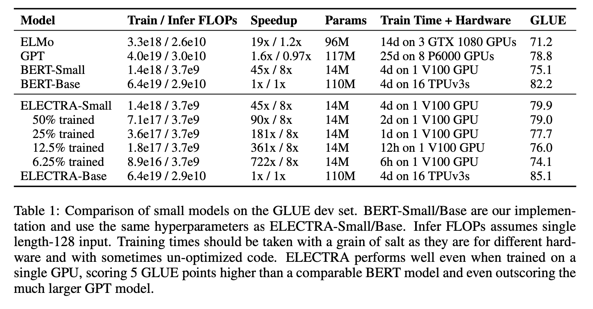
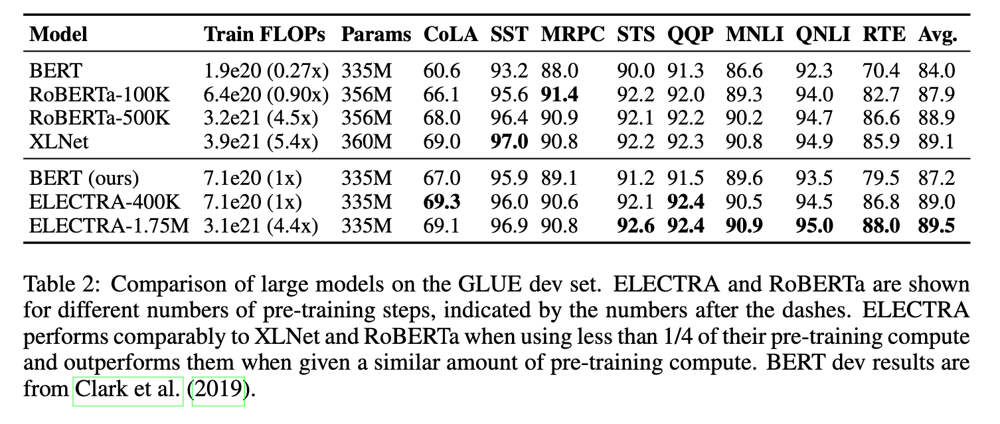
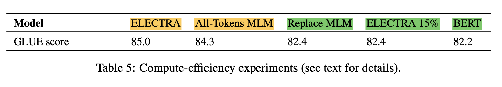

1. Read the title and make an opinion of what’s in the paper (e.g., the area, the task)
ELECTRA: PRE-TRAINING TEXT ENCODERS AS DISCRIMINATORS RATHER THAN GENERATORS
The ‘text encoders’ of the title are the BERT’s which are Bidirectional Encoder Representational Transformers.
2. Read the abstract well and form a hypothesis of
- What’s new in the paper?
- Do you have a clear overview about what the paper is all about?
As an alternative [to MLM], we propose a more sample-efficient pre-training task called replaced token detection
So here they are proposing a new pre-training task which accelerates learning and is more sample efficient. Sounds pretty good.
tokens are corrupted by a small generator network. I want to know how much variance is acceptable in this generator. If it is picky, it may make this process difficult.
instead of training a model that predicts the original identities of the corrupted tokens, we train a discriminative model that predicts whether each token in the corrupted input was replaced by a generator sample or not.
They add, this is more efficient because predictions are defined over all tokens, not just the [MASK] tokens.
we train a model on one GPU for 4 days that outperforms GPT (trained using 30x more compute)
I wonder if they compared directly between their setup and the MLM task. I’m surprised that it would be 30x faster.
3. Look at the images and extract a set of “questions” about what is not clear about their method from the images. Now your job is to answer these questions by reading the paper.
Their results are shown from the beginning, emphasizing that they care about the practical outcomes of this new pre-training task.

This diagram shows the method, primarily how the Discriminator predicts whether a token has been replaced or not, but it seems like an impossible task if the Generator produces probable tokens. The MLM task does predict real information, because it has to understand probable words, but this instance seems like you are only trying to understand the generator, not the language in general.

With the understanding that there is a better signal because the task is per word, does this task have an effect on producing valid language models?
4. Read the method aiming to answer your “questions” about the paper. Focus on understanding only the things relevant for the story (i.e., to understand the contribution).
First they mention that they operate at the token level.
The Generator is not pre-trained, but is trained alongside the Discriminator
This is like a GAN setup, with some key differences. It is possible that the Generator can produce the correct token, so in that case, the token is labeled as “real” even though it is produced by the Generator.
Also the generator is trained with maximum likelihiood rather than being trained to produce realistic responses that the Discriminator cannot discern.
The combined loss is:
5. Read the experiments to convince you that the show results are caused by their claim. Be aware that the experiments highlighted are the best scenarios and are fully hyper-parameter tuned.
They evaluate performance on GLUE and SQuAD test sets.
Table 1 shows the performance of training efficiency.

Table2 shows good performance on smaller models in terms of GLUE benchmarks.

They analyze the efficiency of the training objective by creating a number of pre-training objectives to compare to the proposed ELECTRA variant.
In Table 5, they show the GLUE performance on a number of pre-training tasks, and show that there is 2 points improvement by calculating loss on all tokens (highlighted in yellow) compared to only a subset (highlighted in green).
emphasis my own

6. Make sure you answered all your questions. Did the authors convince you that their story has the effect that they claim?
I think table 5 above does a good job at analyzing the landscape of possibilities that affect training performance, and it does seem meaningful that learning on all tokens would yield better results that only getting a training signal from a subset of tokens.
Although this paper does not solve the problem of high compute needed to train language models today, they provide reasonable alternatives for situations where compute is more moderate, and add good contributions to pre-training tasks that may help improve the language modeling objectives in the future.